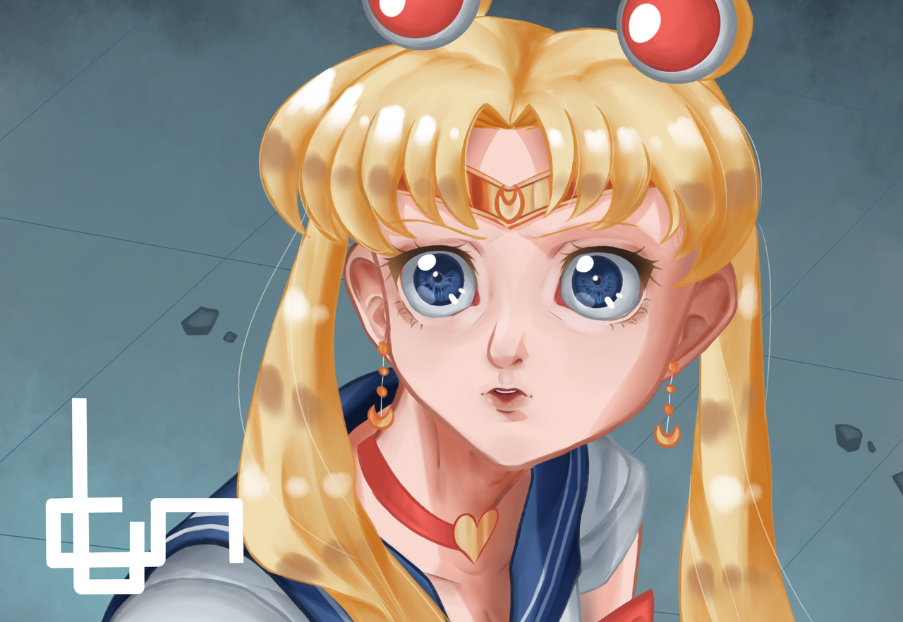

MEUS HOBBIES
Basicamente o que eu mais faço para me divertir, principalmente nos dias atuais, se resume em:
Ouvir músicas

Fotografia do finado Artista Lil Peep
Alguns dos artistas e bandas que mais gosto são: Lil Peep, Clairo, Gemini Aaliyah, Freddie Dredd, HAARPER, Lontalius, entre outros. Os meus gêneros musicais favoritos são eletrônica, trap, e rap.
Jogar

Jogo The Legend of Zelda: Breath of the Wild
Eu adoro jogar jogos eletrônicos, principalmente quando se trata dos que eu mais gosto, como por exemplo, jogos como The Legend of Zelda: Breath of the Wild, Ragnarök Online, Nier: Automata, League of Legends... entre outros.
Desenhar

Fanart minha da personagem Sailor Moon
Desenhar sempre foi um pouco relaxante pra mim, gostava de desenhar desde pequeno. Atualmente estou tentando evoluir como artista digital, mas por hora só desenho por hobby. Respeito muitos artistas digitais como Guilherme Freitas, Emilyena, Guweiz e Marc Brunet.